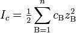
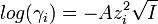
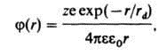

Электрохимия
Активность ионов. Ионная сила раствора. Зависимость коэффициента активности иона от ионной силы раствора. Теория Дебая-Хюккеля.
Активность (ионов) — эффективная концентрация с учетом электростатического взаимодействия между ионами в растворе. Активность отличается от концентрации на некоторую величину. Отношение активности (а) к концентрации вещества в растворе (с, в г-ион/л) называется коэффициентом активности: γ = a/c.
Ионная сила раствора — мера интенсивности электрического поля, создаваемого ионами в растворе. Полусумма произведений из концентрации всех ионов в растворе на квадрат их заряда. Формула впервые была выведена Льюисом:

где cB — молярные концентрации отдельных ионов (моль/л), zB заряды ионов
Суммирование проводится по всем типам ионов, присутствующих в растворе. Если в растворе присутствуют два или несколько электролитов, то вычисляется общая суммарная ионная сила раствора. Для электролитов, в которых присутствуют многозарядные ионы, ионная сила обычно превышает молярность раствора.
Ионная сила раствора имеет большое значение в теории сильных электролитов Дебая — Хюккеля. Основное уравнение этой теории (предельный закон Дебая — Хюккеля) показывает связь между коэффициентом активности иона ze и ионной силы раствора I в виде: где γ - коэффициент активности, А - постоянная, не зависящая от заряда иона и ионной силы раствора, но зависящая от диэлектрической постоянной растворителя и температуры.
Отношение активности (a) к общей концентрации вещества в растворе (c, в моль/л), то есть активность ионов при концентрации 1 моль/л, называетсякоэффициентом активности:
В бесконечно разбавленных водных растворах неэлектролитов коэффициент активности равен единице. Опыт показывает, что по мере увеличения концентрации электролита величины f уменьшаются, проходят через минимум, а затем снова увеличиваются и становятся существенно большими единицы в крепких растворах. Такой ход зависимости f от концентрации определяется двумя физическими явлениями.
Первое особенно сильно проявляется при малых концентрациях и обусловлено электростатическим притяжением между противоположно заряженными ионами. Силы притяжения между ионами преобладают над силами отталкивания, т.е. в растворе устанавливается ближний порядок, при котором каждый ион окружен ионами противоположного знака. Следствием этого является усиление связи с раствором, что находит отражение в уменьшении коэффициента активности. Естественно, что взаимодействие между ионами возрастает при увеличении их зарядов.
При возрастании концентрации все большее влияние на активность электролитов оказывает второе явление, которое обусловлено взаимодействием между ионами и молекулами воды (гидратацией). При этом в относительно концентрированных растворах количество воды становится недостаточным для всех ионов и начинается постепенная дегидратация, т.е. связь ионов с раствором уменьшается, следовательно, увеличиваются коэффициенты активности.
Известны некоторые закономерности, касающиеся коэффициентов активности. Так, для разбавленных растворов (приблизительно до m = 0,05) соблюдается соотношение 1 - f = k√m. В несколько более разбавленных растворах (т ≈ 0,01) величины f не зависят от природы ионов. Это обусловлено тем, что ионы находятся на таких расстояниях друг от друга, на которых взаимодействие определяется только их зарядами.
При более высоких концентрациях наряду с зарядом на величину активности начинает оказывать влияние и радиус ионов.
Для оценки зависимости коэффициентов активности от концентрации в растворах, где присутствует несколько электролитов, Г. Льюис и М. Рэндалл ввели понятие о ионной силе I, которая характеризует интенсивность электрического поля, действующего на ионы в растворе. Ионная сила определяется как полусумма членов, полученных умножением моляльностей каждого иона mi на квадрат его валентности Zi:
I = 1/2∑miZi. (IX.18)
ДЕБАЯ - ХЮККЕЛЯ ТЕОРИЯ, статистич. теория разбавленных растворов сильных электролитов, позволяющая рассчитать коэф. активности ионов. Основана на предположении о полной диссоциации электролита на ионы, которые распределены в растворителе, рассматриваемом как непрерывная среда. Каждый ион действием своего электрич. заряда поляризует окружение и образует вокруг себя некоторое преобладание ионов противоположного знака - т. наз. ионную атмосферу. В отсутствие внеш. электрич. поля ионная атмосфера имеет сферич. симметрию и ее заряд равен по величине и противоположен по знаку заряду создающего ее центр. иона. Потенциал j суммарного электрич. поля, создаваемого центр. ионом и его ионной атмосферой в точке, расположенной на расстоянии r от центр. иона, м.б. рассчитан, если ионную атмосферу описывать непрерывным распределением плотности r заряда около центр. иона. Для расчета используют ур-ние Пуассона (в системе СИ):
n2j = -r/ee0,
где n2-оператор Лапласа, e - диэлектрич. проницаемость растворителя, e0 - электрич. постоянная (диэлектрич. проницаемость вакуума). Для каждого i-го сорта ионов r описывается ф-цией распределения Больцмана; тогда в приближении, рассматривающем ионы как точечные заряды (первое приближение Д.-Х.т.), решение ур-ния Пуассона принимает вид: где z - зарядовое число центр. иона, rd - т. наз. дебаевский радиус экранирования (радиус ионной атмосферы). На расстояниях r > rd потенциал j становится пренебрежимо малым, т. е. ионная атмосфера экранирует электрич. поле центр. иона.
В отсутствие внешнего электрического поля ионная атмосфера имеет сферическую симметрию, и её заряд равен по величине и противоположен по знаку заряду создающего её центрального иона. В этой теории не уделено почти никакого внимания образованию пар противоположно заряженных ионов путём непосредственного взаимодействия между ними.